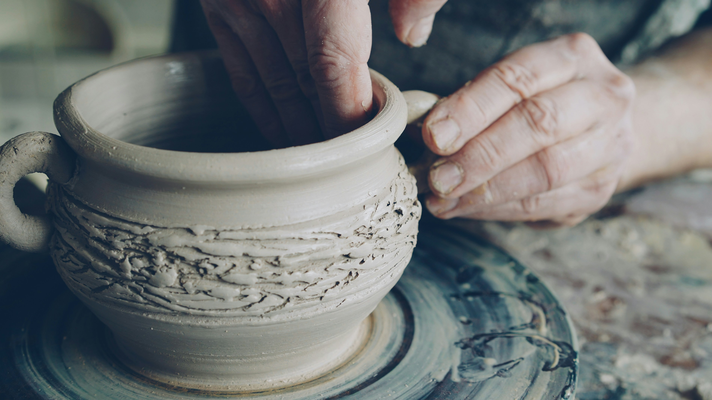
Wheel Throwing — Beginner
Centering, pulling, and your first set of cups. No experience needed.
Terra & Fire is a working studio in Greater karachi where beginners learn to throw their first bowl and longtime potters come back for the wheel, the glaze room, and the quiet of it.
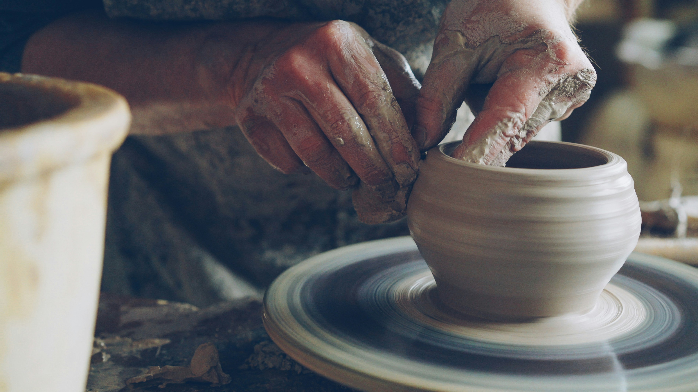
9
years in the same converted garage
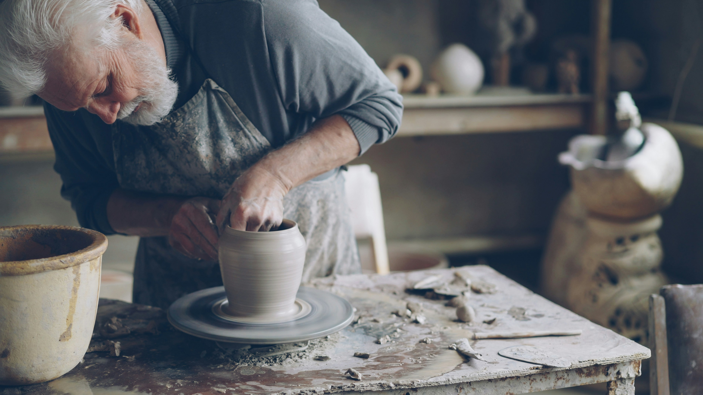
We started Terra & Fire in a converted garage with two wheels and one kiln that only half-worked. Nine years on, the kiln got fixed, but the idea stayed the same: pottery is learned by hand, through repetition, mess, and a fair number of collapsed bowls.
Every class is small on purpose — no more than eight people to a session — so there's always a wheel free and someone nearby to help when the clay starts winning.
The same four stages, whether it's your first bowl or your five-hundredth.
Wedge the air out, then press the clay dead-center on the wheel head before it can spin true.
Push down into the centered mound to hollow it, leaving an even floor for the walls to rise from.
Draw the walls up and thin between wet fingers, a little taller with each steady pass.
Once leather-hard, the foot gets trimmed, then it's two trips through the kiln — bisque and glaze.
Six-week sessions run through the month. Materials and firing are included.

Centering, pulling, and your first set of cups. No experience needed.
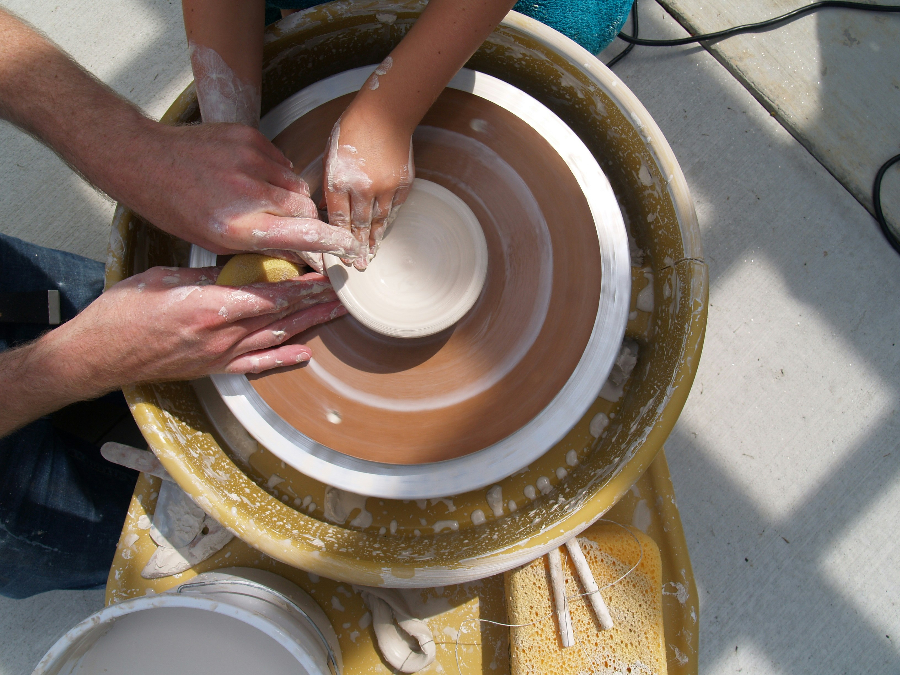
Coil, slab, and pinch techniques for sculptural and functional pieces.
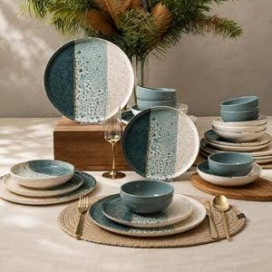
Mixing glazes, layering, and reading how a kiln changes color.
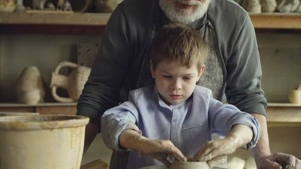
A slower, playful introduction to clay for kids, in small groups.
Work made in the studio, by students and instructors alike.
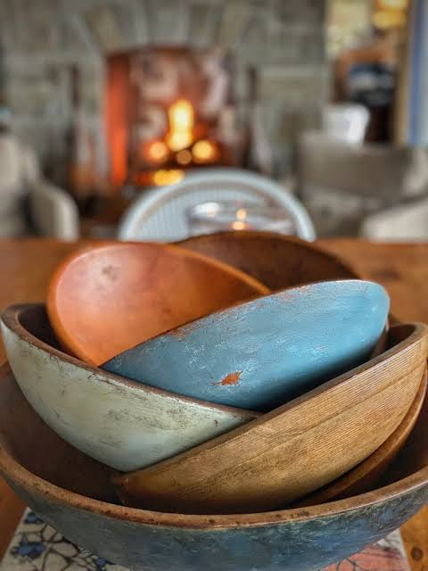
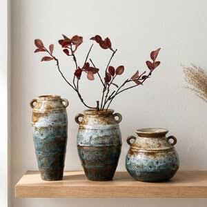
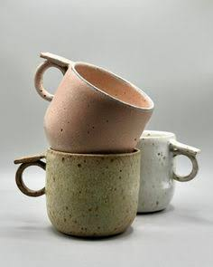
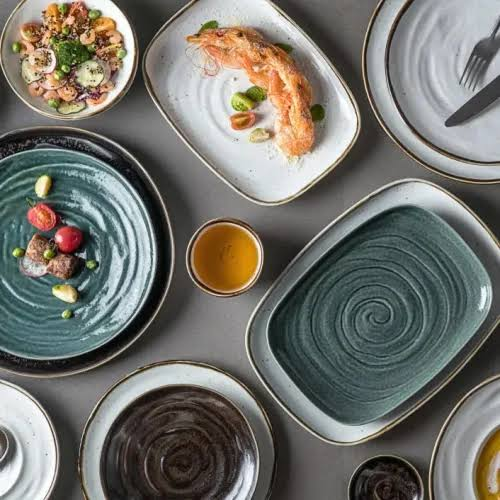
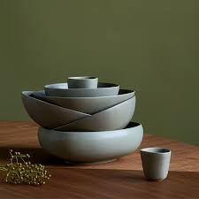
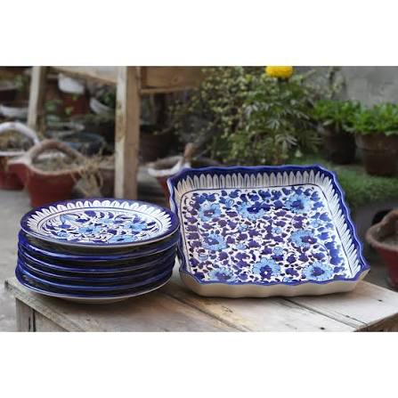
I signed up for six weeks and stayed for three years. My first bowl leaked. My fortieth one doesn't.
Drop by during open hours, or send a note if you'd like to book a class.